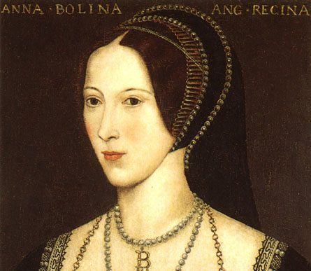
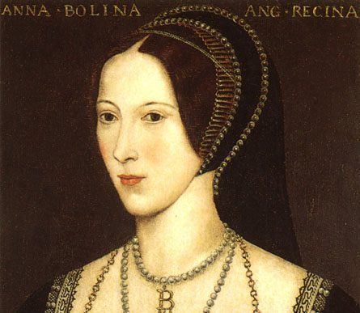

6+1 cudownych żon Henryka VIII
Druga żona Henryka VIII
Powtarzająca się historia, czyli o żonach króla Anglii
Anna Boleyn
Wczesną młodość spędziła na dworze francuskim, u królowej Klaudii, później mieszkała dorastając u Małgorzaty, ówczesnej królowej Nawarry. To tam zdobyła pewne doświadczenie, szczególnie dobre maniery oraz obycie z etykietą dworską. Po powrocie do rodzimej Anglii Anna podjęła zaręczyny z księciem Henrym Percym, który jednak zaręczyny te zerwał poślubiając inną kobietę. Później Anna wróciła na dwór Henryka VIII zabiegając o nawiązanie znajomości z samym królem. Zafascynowany powabną Anną, król Anglii sprzeniewierzył się papieżowi (narodziny anglikanizmu) biorąc rozwód z Katarzyną Aragońską – małżonką dotychczasową. Ślub Anny Boleyn z królem Anglii miał miejsce 25 stycznia 1533 roku. Córka Elżbieta przyszła na świat 7 września 1533 roku. Jednak nie udało się to. Rozczarowany król wobec tego podjął starania, by swoją żonę oddalić. Wkrótce Annie Boleyn zostały postawione zarzuty. Oskarżona została o czary, zdradę męża oraz spiski przeciwko władcy.
Galeria

Ciekawostki
Jej kuzynką była Katarzyna Howard, czyli z kolei piąta żona angielskiego króla. Córką Anny i Henryka VIII była Elżbieta I, późniejsza sławetna królowa Anglii, której panowaniu Anglia zawdzięczała wzrost swej mocarstwowości i miejsca wśród europejskich potęg. W 1526 Henryk VIII zaproponował Annie tytuł maitresse en titre, co miało jej dawać status oficjalnej kochanki. Propozycje tą odrzuciła, świadoma, iż bezpieczeństwo statusu może dać wyłącznie pozycja królowej.
Fakty
Lata życia
Rodzice
Pochodzenie
1501/1507-1536
Elżbieta Boleyn i Thomas Boleyn
Wielka Brytania
Anna Boleyn
Wczesną młodość spędziła na dworze francuskim, u królowej Klaudii, później mieszkała dorastając u Małgorzaty, ówczesnej królowej Nawarry. To tam zdobyła pewne doświadczenie, szczególnie dobre maniery oraz obycie z etykietą dworską. Po powrocie do rodzimej Anglii Anna podjęła zaręczyny z księciem Henrym Percym, który jednak zaręczyny te zerwał poślubiając inną kobietę. Później Anna wróciła na dwór Henryka VIII zabiegając o nawiązanie znajomości z samym królem. Zafascynowany powabną Anną, król Anglii sprzeniewierzył się papieżowi (narodziny anglikanizmu) biorąc rozwód z Katarzyną Aragońską – małżonką dotychczasową. Ślub Anny Boleyn z królem Anglii miał miejsce 25 stycznia 1533 roku. Córka Elżbieta przyszła na świat 7 września 1533 roku. Jednak nie udało się to. Rozczarowany król wobec tego podjął starania, by swoją żonę oddalić. Wkrótce Annie Boleyn zostały postawione zarzuty. Oskarżona została o czary, zdradę męża oraz spiski przeciwko władcy.
Galeria

Ciekawostki
Jej kuzynką była Katarzyna Howard, czyli z kolei piąta żona angielskiego króla. Córką Anny i Henryka VIII była Elżbieta I, późniejsza sławetna królowa Anglii, której panowaniu Anglia zawdzięczała wzrost swej mocarstwowości i miejsca wśród europejskich potęg. W 1526 Henryk VIII zaproponował Annie tytuł maitresse en titre, co miało jej dawać status oficjalnej kochanki. Propozycje tą odrzuciła, świadoma, iż bezpieczeństwo statusu może dać wyłącznie pozycja królowej.
Fakty
| Lata życia | Rodzice | Pochodzenie |
| 1501/1507-1536 | Elżbieta Boleyn i Thomas Boleyn | Wielka Brytania |